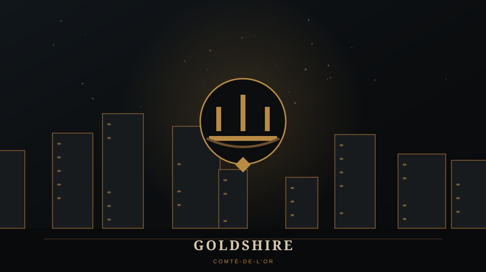

WARCRAFT / LIEUX / WARCRAFT I
GOLDSHIRE
Village aux portes de Stormwind

TYPEVillage humain
RÉGIONElwynn
FACTIONRoyaume d'Azeroth
CAMPAGNEOrque
🏘️ GOLDSHIRE
Goldshire se situe au cœur des terres humaines, non loin de Stormwind. Lorsque la campagne orque atteint cette région, cela montre à quel point l'invasion a progressé.
⚔️ LA HORDE APPROCHE
Dans l'avant-dernière phase de la campagne orque, Goldshire et Moonbrook se retrouvent sur la route de l'offensive. Stormwind est désormais directement menacée.
⚠️ LORE ULTÉRIEUR / SPOILERS
Goldshire deviendra l'un des villages les plus connus d'Elwynn Forest dans World of Warcraft.
💡 LE SAVAIS-TU ?
← RETOUR AU CODEX WARCRAFTUn petit village mentionné dès Warcraft I deviendra, dix ans plus tard, l'un des premiers endroits visités par des millions de joueurs de WoW.